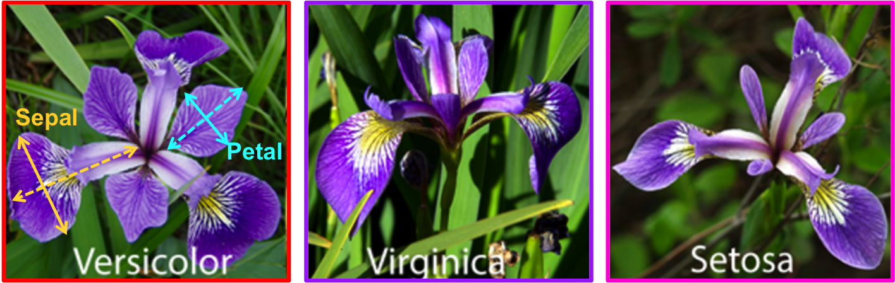

AI for TNFSH: 從入門到入土
Table of Contents
1 人工智慧簡介
1.1 Chat robot
1.1.1 ELIZA
1.1.2 ALICE
1.1.3 Mitsuku
2 背景知識
3 監督式學習
3.1 最短距離分類器
1: import math 2: #from statistics import mean 3: 4: 5: 6: # importing reduce() 7: from functools import reduce 8: 9: def Average(lst): 10: avgx = 0 11: avgy = 0 12: for (x, y) in lst: 13: avgx += x 14: avgy += y 15: return avgx/len(lst), avgy/len(lst) 16: 17: def ed(lst, x, y): 18: dist = 0 19: for (lx, ly) in lst: 20: dist += (x - lx)*(x - lx) + (y - ly)*(y - ly) 21: return math.sqrt(dist) 22: 23: groupA = [[4, 6] ,[5,7] ,[5,8] ,[5.8,6] ,[6,6] ,[6,7] ,[7,5] ,[7,7] ,[8,4] ,[9,5]] 24: groupB = [[2,2] ,[4,2] ,[4,4] ,[5,4] ,[5,3] ,[6,2]] 25: 26: tarx = 5 27: tary = 5 28: 29: centerX, centerY = Average(groupA) 30: sdA = (tarx - centerX)*(tarx - centerX) 31: centerX, centerY = Average(groupB) 32: sdB = (tarx - centerX)*(tarx - centerX) 33: 34: if sdA < sdB: 35: print("A") 36: else: 37: print("B") 38: 39: print(ed(groupA, tarx, tary)) 40: print(ed(groupB, tarx, tary)) 41: 42:
B 7.851114570556208 6.708203932499369
3.2 KNN實作
K-NearestNeighbor分類算法是機器學習裡監督類學習中最簡單的方法之一,由Cover和Hart在1968年提出。kNN算法的核心思想是如果一個樣本在特徵空間中的k個最相鄰的樣本中的大多數屬於某一個類別，則該樣本也屬於這個類別，並具有這個類別上樣本的特性。
KNN為 lazy learner(惰性學習器)的典型例子，所謂惰性是指它不會從「訓練數據集」中學習出「判別函數」(discriminative function)，它的作法是把「訓練數據集」記憶起來。其步驟如下：
- 選定 k 的值和一個「距離度量」(distance metric)。
- 找出 k 個想要分類的、最相近的鄰近樣本。
- 以多數決的方式指定類別標籤。
3.2.1 鳶尾花分類問題
3.2.1.1 DataSet
收集了3種鳶尾花的四個特徵，分別是花萼(sepal)長寬、花瓣(petal)長寬度，以及對應的鳶尾花種類。

Figure 1: 鳶尾花的花萼與花瓣
3.2.1.2 Mission
輸入花萼和花瓣數據後，推測所屬的鳶尾花類型。

Figure 2: 三種鳶尾花
3.2.2 實作
讀取資料集
1: from sklearn import datasets 2: 3: # 讀入資料 4: iris = datasets.load_iris() 5: print(iris.DESCR)
取出特徵與標籤
1: x = iris.data 2: y = iris.target 3: print(x[:5]) 4: print(y[:5])
資料觀察
1: import matplotlib.pyplot as plt 2: import pandas as pd 3: import seaborn as sns 4: #把nupmy ndarray轉為pandas dataFrame,加上columns title 5: npx = pd.DataFrame(x, columns=['fac1','fac2','fac3','fac4']) 6: npy = pd.DataFrame(y.astype(int), columns=['category']) 7: #合併 8: dataPD = pd.concat([npx, npy], axis=1) 9: print(dataPD) 10: # 畫圖 11: sns.lmplot('fac1', 'fac2', data=dataPD, hue='category', fit_reg=False) 12: plt.show()
分割資料集
1: from sklearn.model_selection import train_test_split 2: # 劃分資料集 3: x_train, x_test, y_train, y_test = train_test_split(iris.data, iris.target, random_state=6)
- train_test_split()
所接受的變數其實非常單純，基本上為 3 項：『原始的資料』、『Seed』、『比例』
- 原始的資料：就如同上方的 data 一般，是我們打算切成 Training data 以及 Test data 的原始資料
- Seed： 亂數種子，可以固定我們切割資料的結果
- 比例：可以設定 train_size 或 test_size，只要設定一邊即可，範圍在 [0-1] 之間
- 原始的資料：就如同上方的 data 一般，是我們打算切成 Training data 以及 Test data 的原始資料
scikit-learn.org: sklearn.model_selection.train_test_split
Split arrays or matrices into random train and test subsets
Quick utility that wraps input validation and next(ShuffleSplit().split(X, y)) and application to input data into a single call for splitting (and optionally subsampling) data in a oneliner.
1: sklearn.model_selection.train_test_split(*arrays, test_size=None, train_size=None, random_state=None, shuffle=True, stratify=None)[source]
- train_test_split()
資料標準化
1: # 將資料標準化: 利用preprocessing模組裡的StandardScaler類別 2: from sklearn.preprocessing import StandardScaler 3: # 利用fit方法，對X_train中每個特徵值估平均數和標準差 4: # 然後對每個特徵值進行標準化(train和test都要做) 5: # 特徵工程：標準化 6: transfer = StandardScaler() 7: x_train = transfer.fit_transform(x_train) 8: x_test = transfer.fit_transform(x_test)
分類
1: from sklearn.neighbors import KNeighborsClassifier 2: # KNN 分類器 3: estimator = KNeighborsClassifier(n_neighbors=1) 4: estimator.fit(x_train, y_train) 5: 6: # 模型評估 7: # 方法一：直接對比真實值和預測值 8: y_predict = estimator.predict(x_test) 9: print('y_predict：\n', y_predict) 10: print('直接對比真實值和預測值:\n', y_test == y_predict) 11: 12: # 方法二：計算準確率 13: score = estimator.score(x_test, y_test) 14: print('準確率:\n', score)
3.2.3 作業
修改上述程式碼，以折線圖表示K值與KNN預測準確度間的關係。